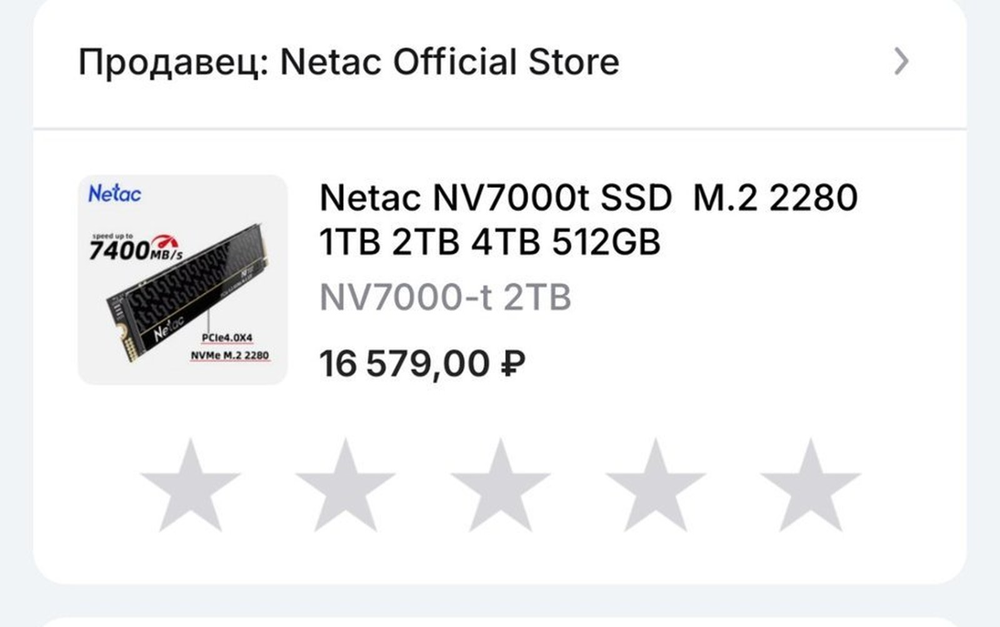
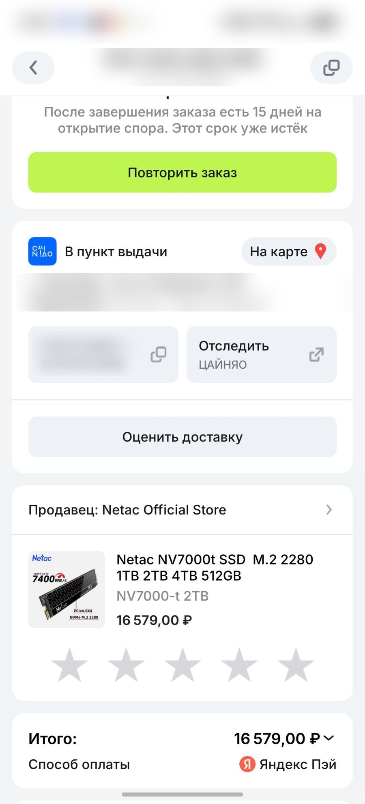
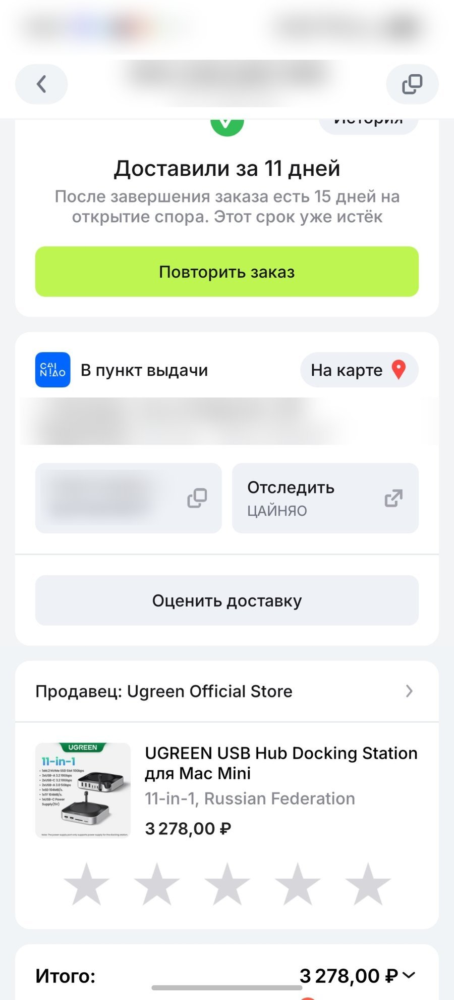

Когда покупаешь базовый Mac mini (16/256), интернет услужливо подсовывает сотни видео с заголовками: «256 ГБ — это приговор», «Внешние диски отваливаются», «Док-станции греют процессор».
Apple за заводской апгрейд накопителя до 2 ТБ просит доплату, сравнимую со стоимостью ещё одного компьютера. Я пошёл прагматичным путём: взял базовый миник, док-станцию Ugreen и быстрый NVMe-накопитель.
Показываю реальные чеки, цифры и то, как эта связка ведёт себя в режиме 24/7.
Смета апгрейда: во сколько это обошлось на самом деле
Все позиции отслеживались и брались на распродажах AliExpress:
- SSD M.2 NVMe Netac NV7000-t на 2 ТБ — 16 579 ₽. Заявленная производителем скорость — до 7400 МБ/с (PCIe 4.0), брал в официальном магазине. Самый адекватный вариант по соотношению цена/скорость. Через док и Type-C реальная скорость будет ниже заявленной — но для игр, фильмов и архивов её хватает с запасом.
- Док-концентратор Ugreen 11-in-1 под Mac mini — 3 278 ₽. Ставится снизу как подставка со слотом M.2, кардридером и передними портами.
- Алюминиевая вертикальная стойка Ugreen — 1 380 ₽.
- Двунаправленный HDMI-свитч Ugreen — 883 ₽.
Итого: ровно 22 120 ₽ за 2 терабайта быстрого хранилища и полную организацию стола.
Про «80 000 ₽»: в США Apple берёт $800 за апгрейд до 2 ТБ при заказе Mac mini (по данным обзора Джеффа Гирлинга). В рублях это примерно 80 000 ₽ по курсу — официально Apple в России не торгует, так что цифра ориентировочная.


Реальность без прикрас: температуры, сон и отвалы
- Нагрев и шум. Накопитель тяжёлыми бенчмарками пока не жарился, но в обычной работе корпус чуть тёплый благодаря комплектной термопрокладке. Вентилятор Mac mini не слышно вообще — тишина круглосуточная.
- Отвалы диска. На форумах жалуются на ошибки при выходе из сна. У меня Mac mini работает как серверная машина: 24/7 крутит чат-бота для бизнеса и служебные процессы. Компьютер просто не уходит в глубокий сон — гаснет только монитор. Итог: ни одного отвала накопителя за всё время.
- Распределение памяти. Внутренние 256 ГБ отданы под систему и ключевой софт. На внешние 2 ТБ без проблем встала библиотека игр Steam и тяжёлые файлы — всё грузится быстро и без задержек.